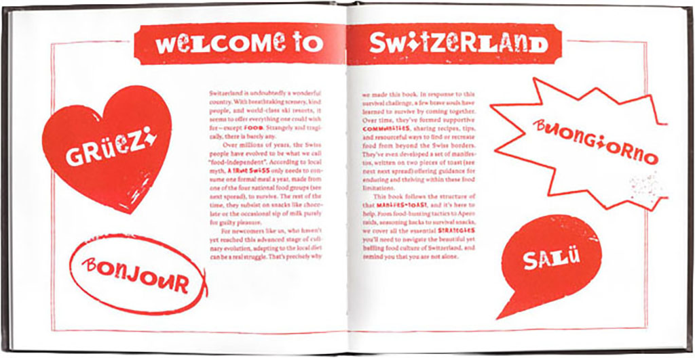
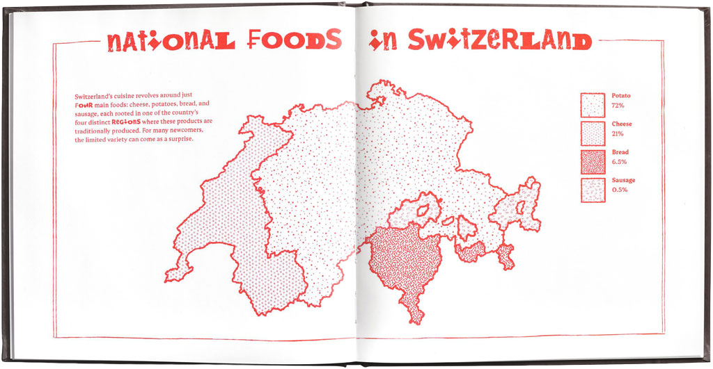
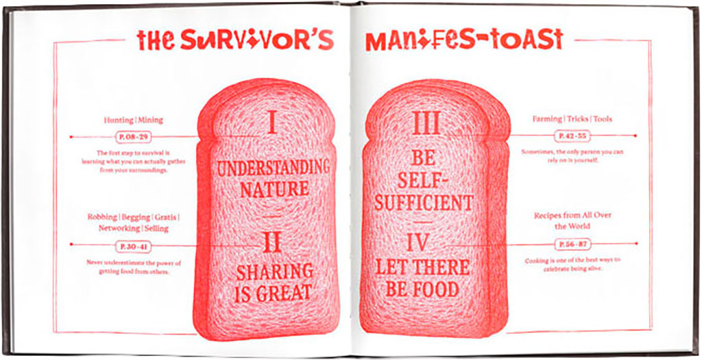
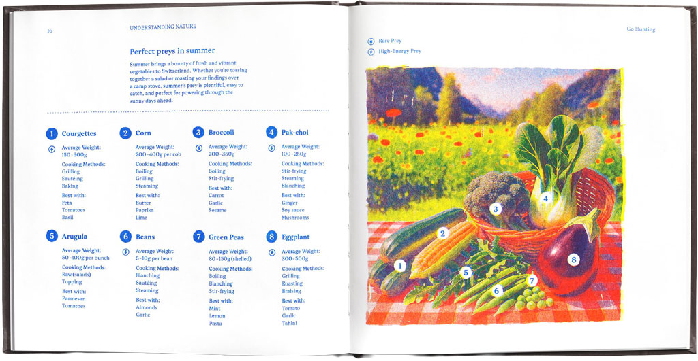
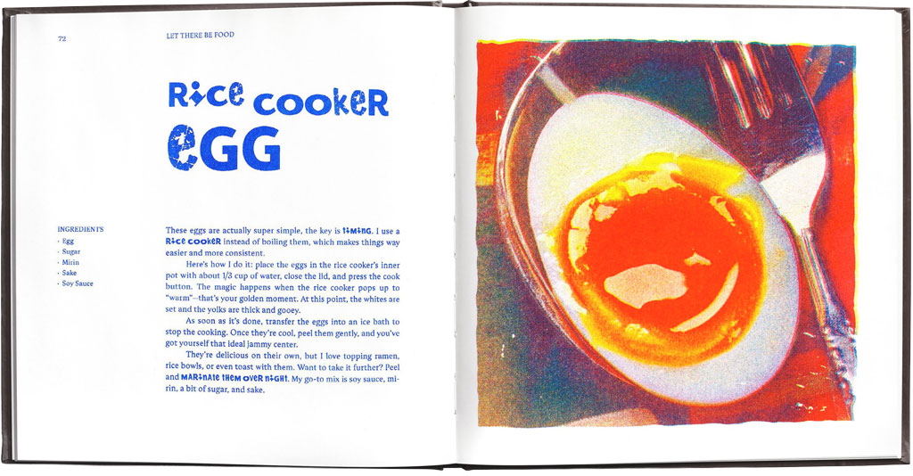
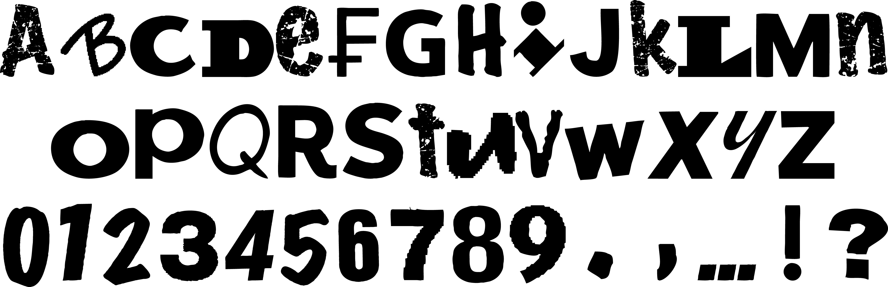

INFO
How to Stay Alive is a satirical survival guide for newcomers who haven’t yet evolved to be "food-independent" like the locals. From "hunting" rare prey like soy sauce in supermarket aisles to mastering the art of the free "Apéro" snack raid.
This project explores the art of self-sufficiency, teaching you how to turn store-bought pizza dough into hand-pulled noodles or grow a survival garden on your windowsill. By blending dark humor with information design, we’ve compiled a collection of hacks and recipes to remind you that you aren't alone in the struggle to eat well in the land of chocolate.
CREDITS
Concept and design: Lucie Lin & Jiawen Mei
With contrubutions of: Uliana Kozachynska / Ivan Liuzzo / Mildred Nankanga / Yunshu Qin / Shiping Sheng / Tzu-Chi Su /Jiaqi Tong / Hsiao-Yen Yao





